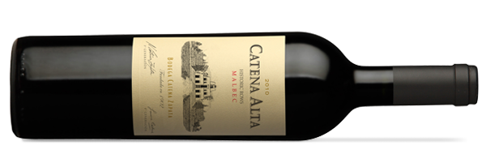

Nuestros productos
El vino argentino, bebida nacional de Argentina 1 que se produce principal y tradicionalmente en las provincias de Mendoza (75,31%), San Juan (18,45%), La Rioja (3,06%), Salta (1,76%), Córdoba (0,55%), Catamarca (0,53%) y en las últimas décadas han comenzado a elaborarse en Neuquén (0,49%), Río Negro (0,24%), Entre Ríos (0,001%), Chubut (0,003%), Buenos Aires (0,005%), Jujuy (0,003%) y San Luis (0,15%). Conforme datos del Instituto Nacional de Vitivinicultura (INV), Argentina produjo en 2018 un total de 14.521.510 Hl (hectolitros) de vino, representando este valor un incremento del 22,8% respecto al año 2017
Malbec
El malbec es una variedad de uva morada usada para la elaboración de vinos tintos y blancos (Blanc de Malbec, en Argentina). Las uvas tienden a tener un color oscuro y abundantes taninos, y se hicieron conocidas por ser una de seis uvas permitidas en las mezclas del vino de Burdeos. Las plantaciones francesas de malbec se encuentran sobre todo en Cahors, en el suroeste de Francia, debido a que es el lugar de origen, aunque hoy ya se planta en todo el mundo. Así también las plantaciones de esta uva se incrementaron para ser usada en la elaboración de un vino varietal argentino
Cabernet Sauvignon
El cabernet sauvignon es una de las uvas tintas más conocidas del mundo. Crece en casi todas las grandes zonas vitícolas, en un diverso espectro de climas, desde el valle del Okanagan (Canadá) al valle de la Becá (Líbano). La cabernet sauvignon se hizo famosa por su presencia en el vino de Burdeos, donde es mezclada a menudo con la merlot y con la cabernet franc. Desde Francia, la uva se ha extendido por Europa y por el Nuevo Mundo instalándose en las montañas Santa Cruz de California, el valle de Napa, la bahía Hawkes de Nueva Zelanda, el río Margaret y la región de Coonawarra de Australia, y los valles chilenos del Maipo y de Colchagua. Durante buena parte del siglo XX, fue la uva tinta de vino premium más plantada del mundo, hasta que fue adelantada por la merlot en los años 1990.
Chardonay
El chardonnay es una variedad de uva de piel verde usada para hacer vino blanco. Es originaria de la región vitícola de Borgoña, en el este de Francia, pero ahora crece en todas partes donde se produce vino, desde Inglaterra hasta Nueva Zelanda. Para regiones vitícolas nuevas y en desarrollo es visto como un "rito de paso" y como una fácil entrada en el mercado internacional del vino.